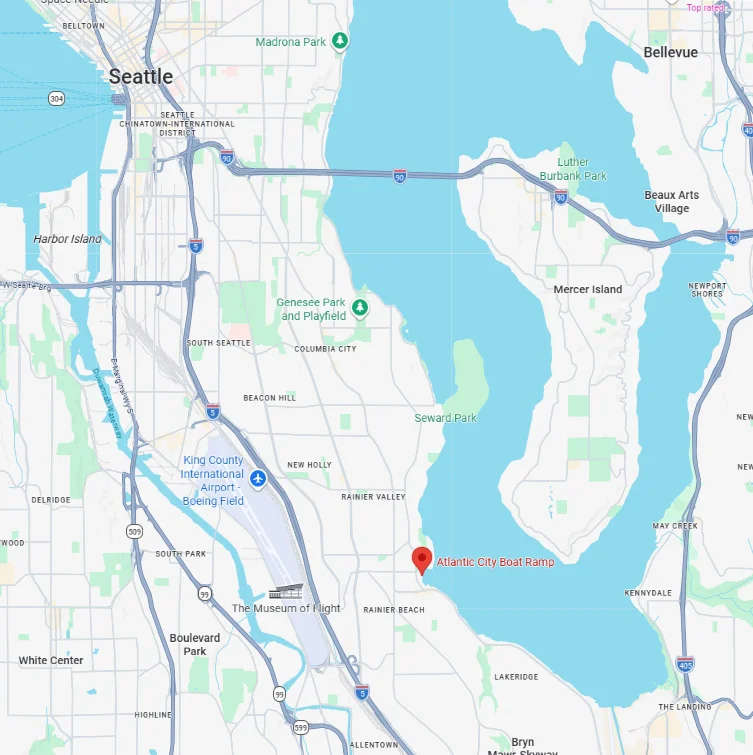
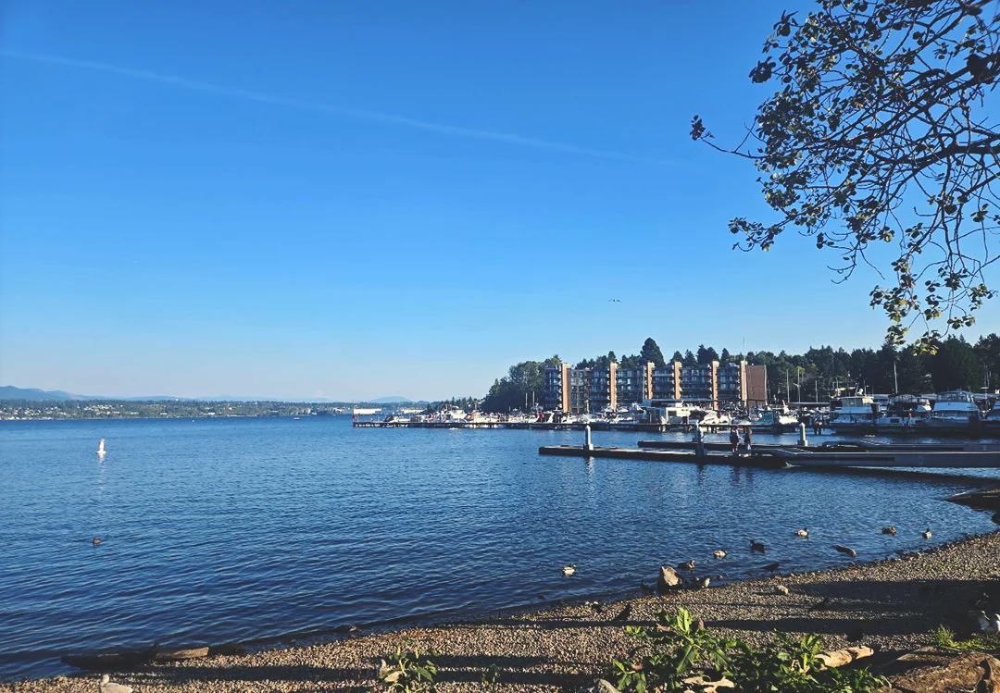
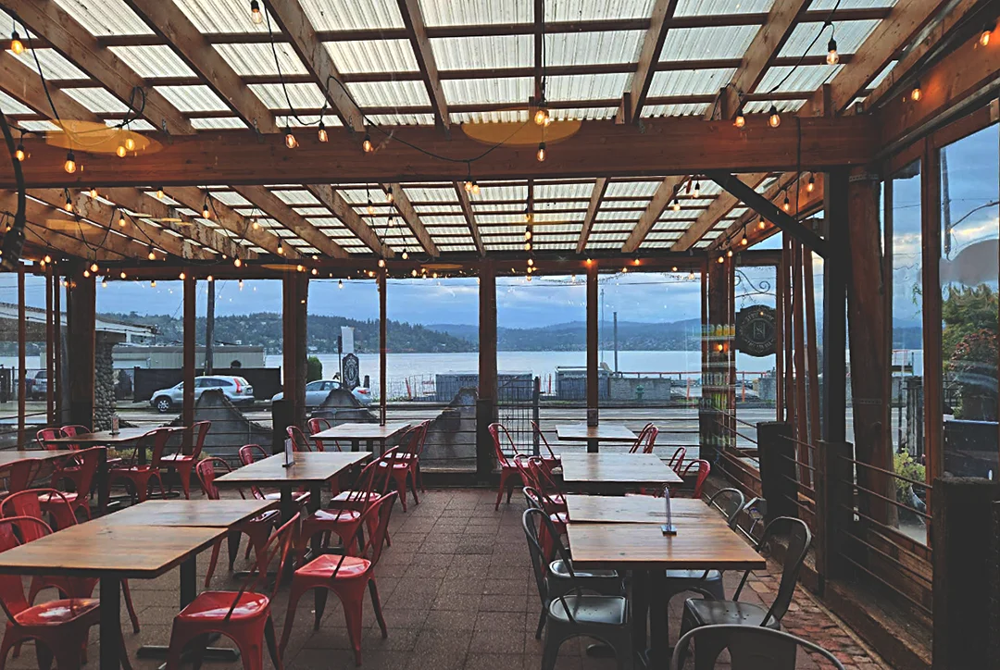
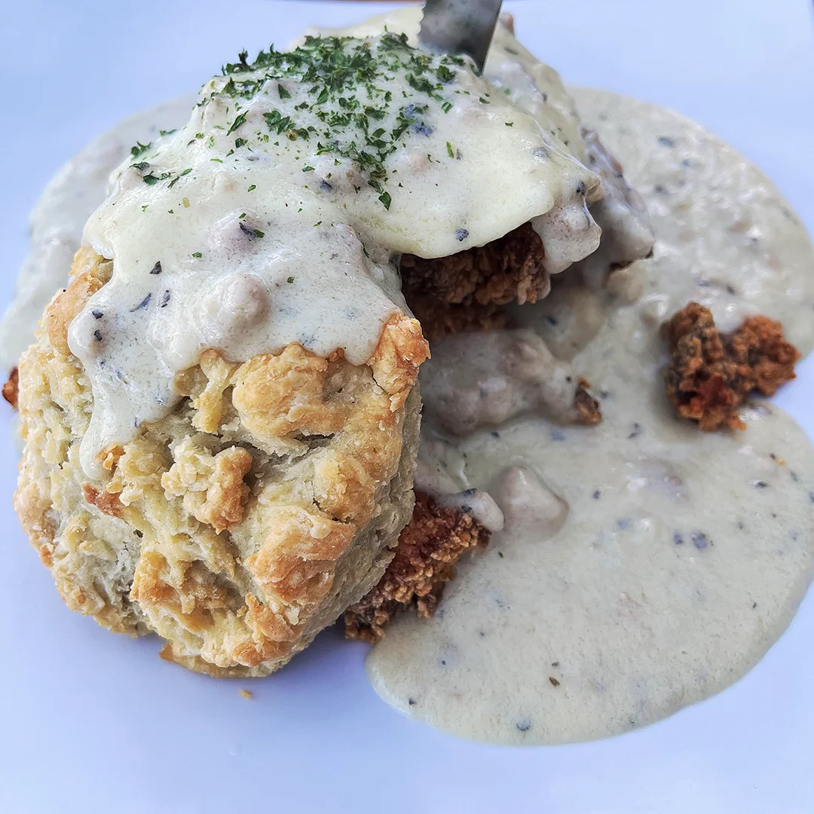
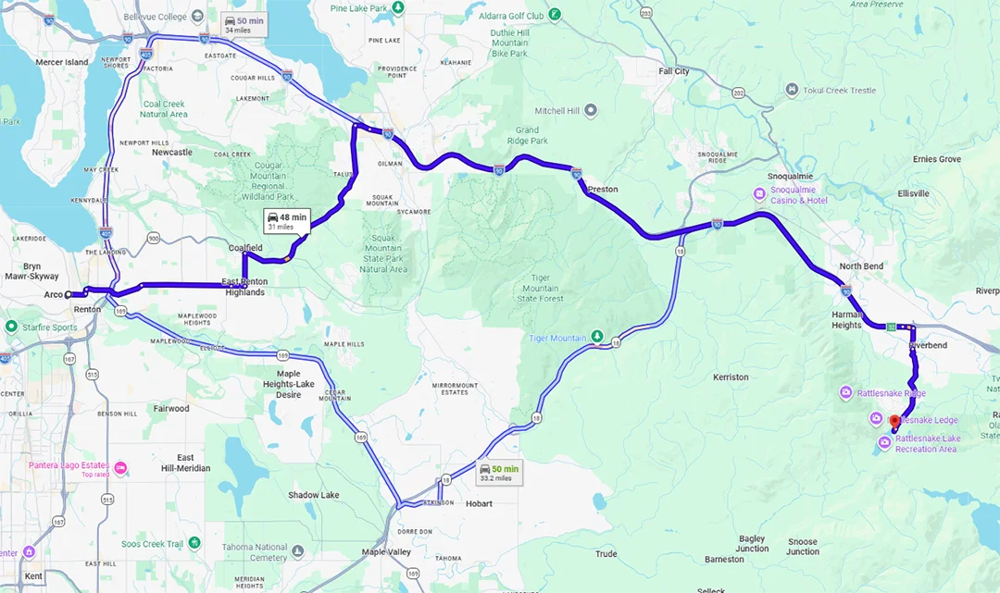
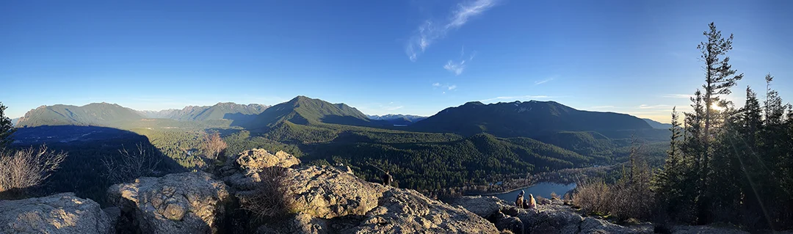
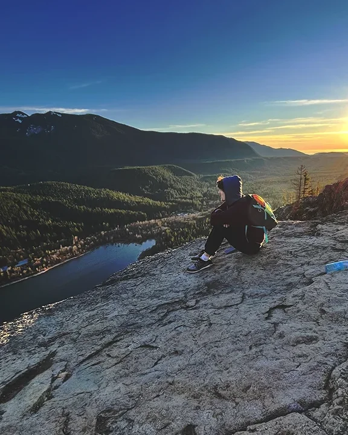
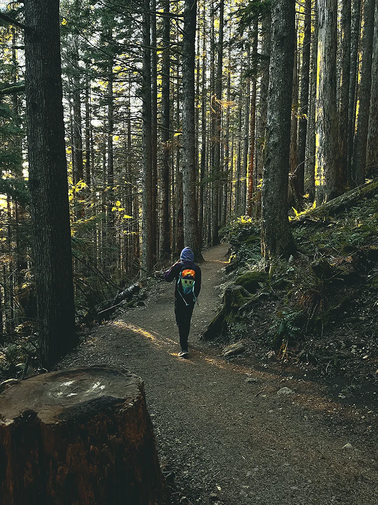
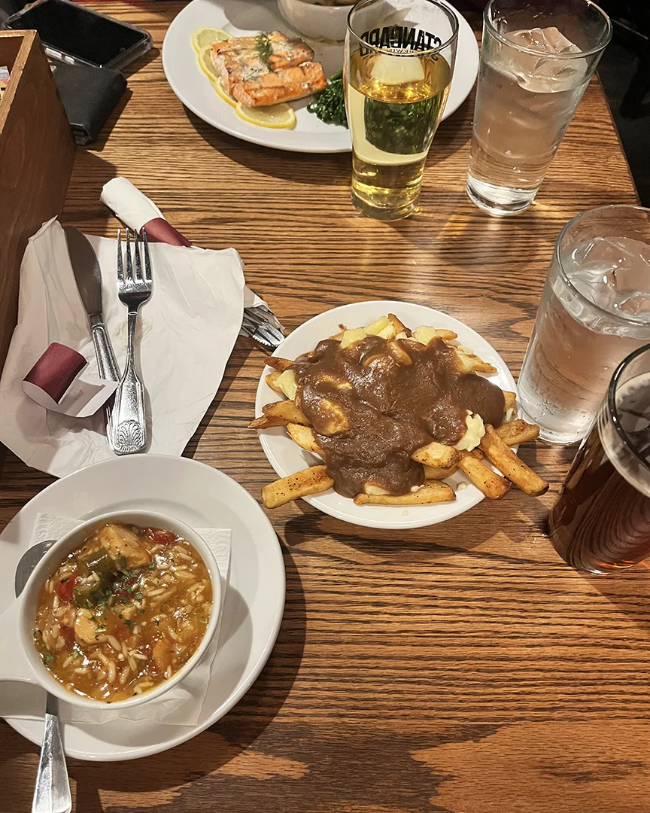

Day 3 - Going South, Great Food, and Hiking
Lake Washington

We got up very late. The staff were nice enough to keep out the eggs a little longer than they were supposed to. I had brought back yogurt and berries from the market, so I slurped that down while Rhett made his eggs. I sipped my coffee when he got back, posing the question "What would you like to do today?" I felt like I needed some more nature, and Rhett agreed it would be fun to go see some of the neighborhoods on the south side of the city. We decided on driving around the Rainier Beach / Valley area.

As we fell away from the heart of the city, the shape of the suburbs grew clearer. Along the route we saw schools being remodeled, shops brimming with life, and a handful of beautiful gardens. Dedicated picnicing areas and parks were bountiful along the water's edge. It was a relaxing drive, weaving up and down the magnificent hills. We didn't quite know where to stop, but we both had to pee, so the first park we saw with a bathroom we pulled over. It happened to be a boat launch near the southern tip of the lake.
The Atlantic City Boat Ramp was in a quaint part of the neighborhood. The high school wasn't far away, and there were six-story condominiums stretching to the sky. We encountered a few people enjoying their morning, feeding the ducks and geese. There were flocks of birds mingling close to the shore. It truly was a communal spot!
The Stonehouse Cafe

Rhett was feeling hungry again, so we looked for a real breakfast nearby. We settled on the StoneHouse Cafe. It had a very friendly but quite expensive vibe. Rhett got a burger and a beermosa, whereas I indulged in a longtime favorite- biscuits & gravy, washed down with a beermosa. It was phenomenally presented and tasted even better! I would have gladly wolfed down another serving if my pockets weren't begging me to stop.

Our appetites satisfied, we decided to see what sort of naturesque activities we could do nearby. It was nearly two in the afternoon when we finished, but my vote was for Mt. Rainier. Rhett logically suggested an alternative, maybe not something we would have to spend hours to drive to. I reluctantly agreed, and we started searching for trails nearby. We settled on a location with excellent reviews and not too far of a walk- Rattlesnake Ledge Trail, with the first sightseeing spot just under 2 miles from the trail head. We calculated the amount of daylight left by the time we would get there and decided we would have just enough to get up and go back down if we left soon. We paid for the wonderful food and headed out.
On our way, I stopped at an Arco to buy some sunglasses, water, and a snack, but mainly for the shades. I couldn't see very well looking into the sun, but with that problem taken care of, we went on our way. We decided to take the scenic route, taking Sunset Boulevard up to Interstate 90. It was slow going on Sunset, especially with the school bus stops. We eventually made it to the interstate, and I was not prepared for the mountains that we were going up and down. The roads had incredible elevation changes! Mountains were around all sides of us.
Rattlesnake Ledge Trail

We missed our exit, but we doubled back and eventually found the road we were supposed to be on. We drove slowly up ol' twisty Cedar Falls to the trail head. There were plenty of cars there, so we had to park on the road. Crazy, even for a Friday. I can't imagine what it's like in the peak of the summer. Rhett and I got out of the car and stared. "No way are we going up there!" we both thought. We gathered our things, and dressed in boots, sweats, and Pumas, we shouldered off toward the first incline.
It was steep the whole way. I remember breathing in the air though. It felt very clean, very moist. Good for the lungs, as Rhett mentioned. We took turns holding the bag, stopping every so often to check something out or sip some water. At some point I started asking people who were coming down the mountain (jokingly), "How much further?" One answered, "You have a ways to go yet, I'm afraid." Not long after that response, a lady encouraged us with "You're almost there!" Turns out, we were not almost there. It's a lot harder to climb a mountain trail than it is to go down it.
I didn't mind the hike at all. I loved seeing all the tall trees around us. It felt very peaceful. Sure, we encountered some people every so often, but for the majority of the hike we were alone. Rhett was appreciative of the nature, too, making comments like "I wish we had trees like this back home." Eventually the trees were beginning to thin out, and upon cresting a small hill, we could see the vantage point.

It was beautiful and windy. You could see the mountains all around us and make out the tiny cars way down below. There were people and a brown squirrel to commune with, and a fine gentleman blogging there while we sat on the ledge. The view was absolutely exquisite. We took some pictures and burned the view into our memory.

When the sun was about to set, we took off back down the trail. We saw a few people on the way down making haste to see the view before night fell. I offered them encouragement but Rhett told me that wasn't nice. Eventually, we stepped out by the road.

Not many people were in the park by then. We decided we had gotten our steps in for the day and that we were famished, especially with hiking four miles. I put the Corolla in drive, and we quickly made our way back down the road toward the highway and the city.
The Elephant & Castle Pub
Traffic picked up on the way back. All of a sudden all the cars were getting into a single lane. We were irked until we saw a car completely flipped over. The fire trucks were blocking the rest of the highway, leaving just that one lane open. Safe to say, it took a while to get back to our parking garage.

We finally made it, and once again, of course, we were famished. We had just walked thousands of steps up a mountain! Rhett was interested in finding some beer and good food, so we looked and there was a place called The Elephant & Castle Pub just down the street from where we were staying. We stepped into a charming dining room reminding me of British society, with white brick walls and wooden-beamed ceilings, accents of red splashed here and there, adding excitement to the establishment. Soccer games were on every television that I saw.
A waiter showed us to our seats, offered us each a menu, and asked us if we wanted anything to drink. I asked for water while Rhett scanned the drink menu. He returned with a sweating glass. It was amazing to have icy water after the hike. We both ordered a beer, too, and put in our food. It took awhile, but he eventually came back. I ate a generous portion of poutine while Rhett consumed some Salmon, which I could've gotten two of my bowls of chef's soup for. It was tasty food, though, and left us both feeling satisfied.
It was pretty late once we finally paid for our sustenance. We were both fairly tired from the hike, and so we headed back to the hostel to take showers. I went straight to bed afterward, excited for what the next day had to come.